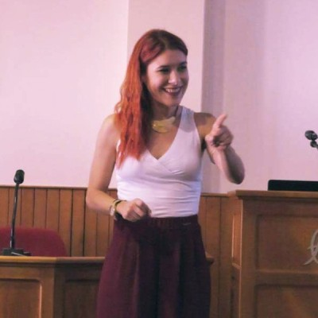

Chairing the SUM 2026 local committee
Local Committee Chair for the 17th International Conference on Scalable Uncertainty Management, hosted by NTUA in Athens.
SUM 2026 committee
Dr Sofia Almpani
I explore how computational argumentation and formal reasoning can make intelligent systems more transparent, accountable and responsive to human needs.
Postdoctoral Researcher · National Technical University of Athens
01 / NEWS & HIGHLIGHTS
Selected publications, recognition and mentoring highlights from my recent academic work.
Local Committee Chair for the 17th International Conference on Scalable Uncertainty Management, hosted by NTUA in Athens.
SUM 2026 committeeThree journal articles on human-centred AI, collaborative argumentation and requirements for countering hostile narratives.
Explore publicationsMentoring the Perseus team in cybersecurity and unmanned aerial systems, recognised with a Youth Entrepreneurship Award.
See the Perseus awardRecognition for work on a logical reasoning system supporting compliance with data protection regulations.
Details in academic CVPapakyriakopoulos Research Scholarship at NTUA in Mathematics of Computer Science.
Organisational committee contribution to the 3rd Panhellenic Scientix Conference in Athens.
COST Action Wearable Robots scientific mission on ethical, legal and societal aspects of wearable robotics.
02 / RESEARCH
Three connected strands shape my research: rigorous methods, responsible design, and applications that make AI useful in practice.
Frameworks for explainable, verifiable and traceable reasoning in intelligent and multi-agent systems.
Logic · Decision supportTransparent decision-making, human oversight, ethical reasoning and regulatory compliance.
Trust · GovernanceTrustworthy AI applied to cybersecurity, aerospace, wearable robotics, medical devices and educational technologies.
Cybersecurity · RoboticsMy goal is to develop an interdisciplinary research programme in trustworthy and explainable AI, expanding international collaborations, attracting competitive funding, and involving students in research that connects AI theory with real-world challenges.
03 / PROJECTS
Selected collaborative projects spanning AI, robotics, cybersecurity, education and digital innovation.
Understanding hostile online narratives
Research on hostile online narratives, socio-technical requirements and approaches to detecting disinformation, hate speech and deepfakes.
Mobile makerspaces for schools
Development of educational materials and a Moodle-based platform for mobile makerspaces in secondary education.
Learning through making
Educational R&D for maker education, combining STEM learning, CAD, 3D printing and hands-on design.
Inclusive robotics for society
Research on educational robotics and the societal uptake of robotics, with contributions to deliverables and workshops.
A robotics ecosystem for STEM
Curriculum and educational material development supporting an expandable educational robot and its learning ecosystem.
Making digital terms understandable
Ontology-based annotations of online terms of service to support transparency, privacy and informed decisions.
The CV provides further details on my role and research contributions to each project.
04 / PUBLICATIONS
A selection of peer-reviewed work. The complete bibliography is available in my academic CV and Google Scholar profile.
View Google Scholar ↗Almpani, S., Loucopoulos, P., & Plithas, A.
Almpani, S., & Stefaneas, P.
Almpani, S., Gantzounis, A., & Stefaneas, P.
Sofroniou, A., Premnath, B., Sisamos, C., Almpani, S., & Sisamou, E.
Almpani, S., Stefaneas, P., & Chakraborty, M.
Almpani, S., & Stefaneas, P.
Almpani, S., Kiouvrekis, Y., Stefaneas, P., & Frangos, P.
Almpani, S., Mitsikas, T., Stefaneas, P., & Frangos, P.
05 / TEACHING
I combine clear conceptual foundations with laboratory practice, worked examples, constructive feedback and independent problem-solving.
My aim is to help students develop both technical competence and critical, responsible engagement with AI and digital technologies.
TEACHING ETHOSAdjunct lecturer · Sep 2025–present

Contract Teaching Personnel · Mar 2026–present
Adjunct lecturer · Sep 2025–Feb 2026
Seconded educator · Sep 2023–Sep 2024
Teaching Assistant · Sep 2018–Feb 2021
NTUA · NKUA · Academy of Athens · Feb 2026–present

Visiting lecturer · 2026–present
Guest lectures · Mar 2020 & Mar 2026
06 / COMMUNITY
Research grows through collaboration, mentoring, shared tools and active participation in the scholarly community.
Editorial Board member of Studia Humana; scientific and organising committee involvement in SUM 2026, PoEM 2026, UNILOG, Scientix and Rules: Logic and Applications workshops.
Collaborations spanning RuleML, the University of Twente, Jadavpur University, the Hellenic-Romanian Logic and Computation Group, and European robotics and STEM education networks.
Mentoring doctoral and early-career researchers, the ENGINO Educational R&D team, and student teams including Perseus (cybersecurity and UAVs) and Ikaros (EuroBot robotics).
Contributions to more than 20 research and innovation proposals, including scientific writing, work-package development, budgets, partner coordination and submission.
07 / CONTACT
I welcome conversations about trustworthy AI, computational argumentation, research collaborations and interdisciplinary teaching.